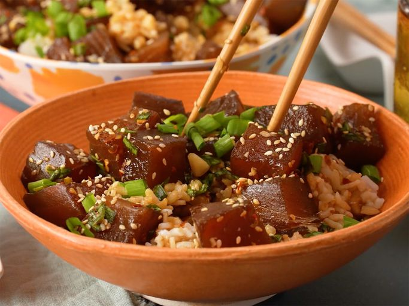

Ahi Tuna Poke

Freshly made ahi tuna poke bowl
This easy poke recipe is a refreshing Hawaiian salad of fresh ahi tuna steak cubes tossed with soy sauce, sesame oil, and green onions for a dish full of umami flavor.
Ingredients
- 2 pounds fresh tuna steaks, cubed
- 1 cup soy sauce
- 3/4 cup chopped green onions
- 2 tablespoons sesame oil
- 1 tablespoon toasted sesame seeds
- 1 table spoon crushed red pepper
Steps
- Gather all ingredients
- Place tuna in a medium non-reactive bowl. Add soy sauce, green onions, sesame oil, sesame seeds, macadamia nuts, and red pepper flakes; mix well. Cover and refrigerate at least 2 hours before serving.
- Serve over rice.